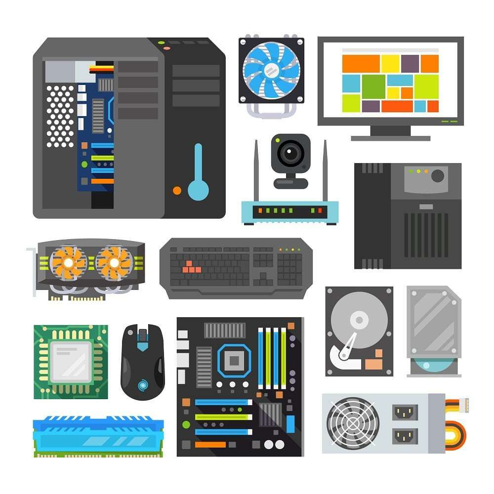

What is computer hardware system?

Computer Hardware System
CSPT
A computer is a piece of electronic equipment that can analyze data, carry out calculations, and come to logical conclusions in response to user instructions. It is made up of both software, which is a collection of instructions that tells the computer what to perform, and hardware elements like a central processing unit (CPU), memory, storage, and input/output devices. Computers are used for a variety of tasks, such as personal and professional computing, scientific simulations, and the creation of multimedia. They have transformed many facets of our lives and are now a necessary tool in contemporary society.
Computer Components
- Motherboard
- Processor
- Ram (Random Access Memory)
- Graphics Card
- HDD/SSD (Hard Disk Drive/Solid State Drive)
- Case
The motherboard is the main board that is screwed directly inside the computer case. All other cards and everything else plugs directly into the motherboard, hence its name. The CPU, RAM, drives, power supply, and more are connected to it. Its function involves integrating all the physical components to communicate and operate together. A good motherboard offers a wide amount of connectivity options. It also has the least amount of bottlenecks possible. This allows all the components to operate efficiently and to fulfill their maximum potential as they were designed to do.
The CPU or central processing unit is basically like the brain of computer systems. It processes all the information on a computational level. It takes all the processes from the RAM and processes them to perform the tasks required by the computer system. The central processing unit is usually seated in a socket that utilizes a lever or a latch with a hinged plate with a cut-out in the center to secure the CPU onto the motherboard. It has many copper pads underneath it for the socket contacts to push up against them to make electrical contact.
RAM is a data storage device that can provide fast read and write access. RAM is volatile memory, meaning it loses all the stored data when power is lost. The RAM keeps data ready for the CPU to process. The RAM speed is a big contributor to the overall speed of a computer system. It plugs directly into a long slot that has contacts on either side of the slot. It, has a clock speed, just like a processor. So, it can also be overclocked to deliver increased performance beyond the intended specification. Certain RAM modules are sold with a heat spreader. It helps dissipate the heat from the individual memory ICs, keeping them cooler.
Based on the NVIDIA GTX 1650 GPU, the ASUS GTX1650 TUF OC graphics card includes 4GB of GDDR6 memory. The memory is overclocked by the manufacturer (OC) to operate at higher rates and is connected to a 128-bit bus. It is a suitable choice for demanding use in high-end gaming and other demanding applications because it bears the TUF (The Ultimate Force) name and is a member of ASUS' range of tough and durable goods.
A solid-state drive (SSD) with a capacity of 250GB that utilizes the NVMe protocol over a PCIe interface is the Kingston 250GB NV1 NVMe PCIe M.2. The drive has an M.2 form factor, a thin and effective construction frequently found in contemporary laptops and desktop PCs.
In comparison to conventional SATA-based SSDs, NVMe is a high-performance storage technology that offers higher read and write rates. The Seagate 1TB SATA is a conventional hard disk drive (HDD) with a 1TB capacity that connects to the computer using the SATA III interface. Although having a 6Gbps data transfer rate, SATA III SSDs are slower than NVMe-based SSDs. The 1TB capacity offers enough storage for daily use, although the drive might access data more slowly than an NVMe SSD.
This is the component that holds all of the parts to make up the computer system. It is usually designed in such a manner to make fitting a motherboard, wiring, and drives as easy as possible. Some are designed so well that it is easy to make everything look tidy and presentable. Cases come in all different sizes and shapes to accommodate various types of computer components and satisfy the consumer’s needs. Design elements can vary from plain to highly elaborate. You can get a plain grey desktop case or one with colored lighting everywhere to make it look spectacular. Computer cases rely on computer fans inside them to create proper airflow to keep all the internals cool and working reliably. A computer case, like most things, varies in quality. You can get them made from cheap metals or good quality materials that provide you with a sturdy design.

Nice Content.
— Jean Hicks

Amazing.
— Chris Stanworth